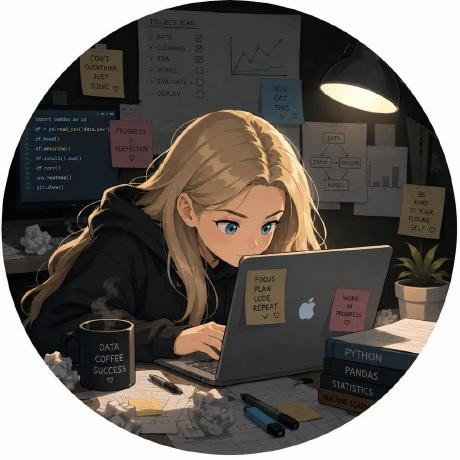
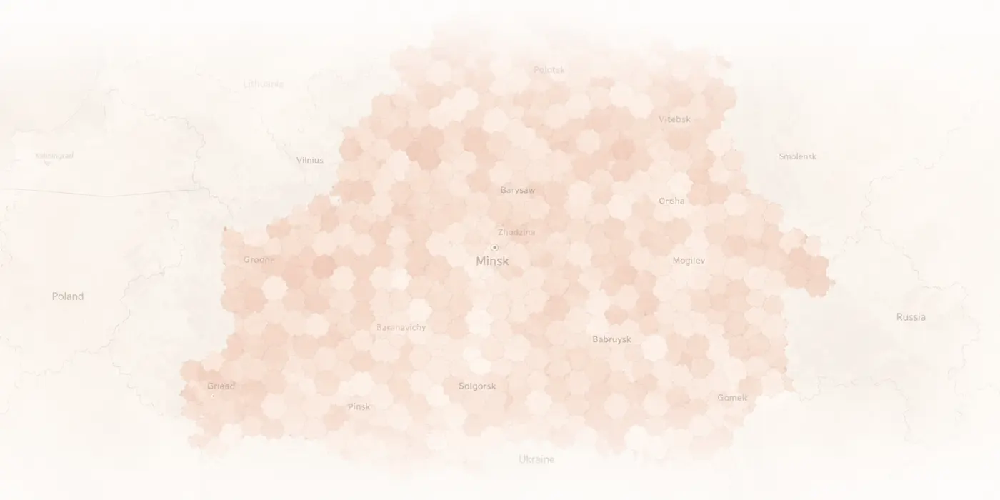
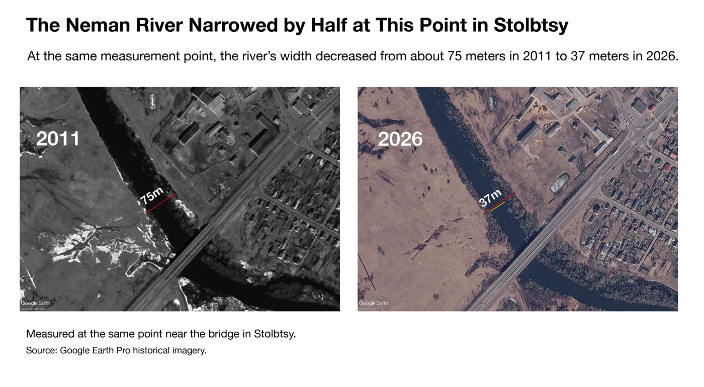

Belarus
Losing a Language
How Belarusian disappeared from daily life but remained central to identity.
Read the story
Portfolio
Data Journalist
I crunch data for breakfast.
My work focuses on Belarus and New York, using public records, scrapin, geospatial analysis and interactive design to make complex stories clear.
Reporting & visual stories
Belarus
How Belarusian disappeared from daily life but remained central to identity.
Read the story
Belarus
In Belarus, 428,000 people live in settlements more than an hour’s walk from the nearest medical facility.
Read the storyNew York
What replaced New York’s former movie theaters and what people still remember.
Read the story
Belarus
How Belarus is losing its surface water, shown through four decades of satellite data.
Read the story